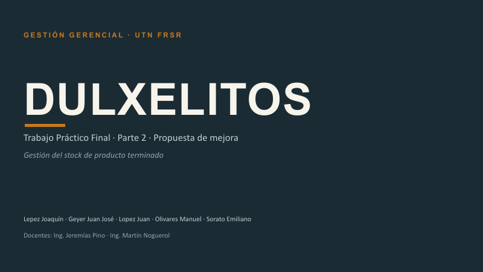
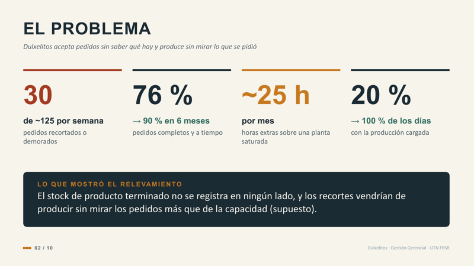
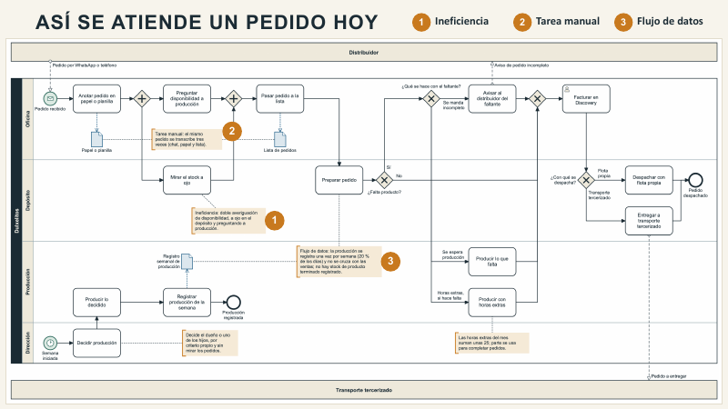
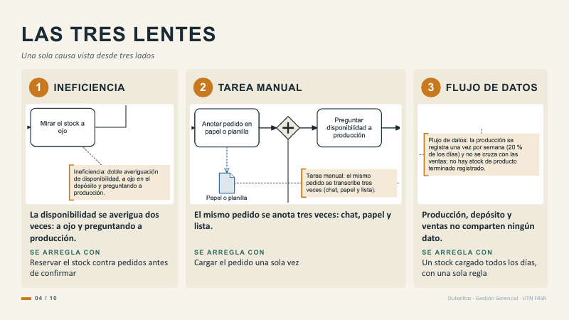
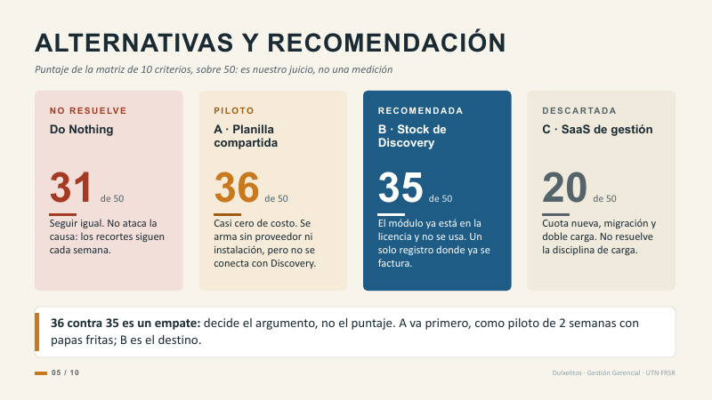
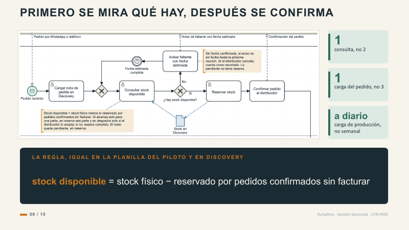
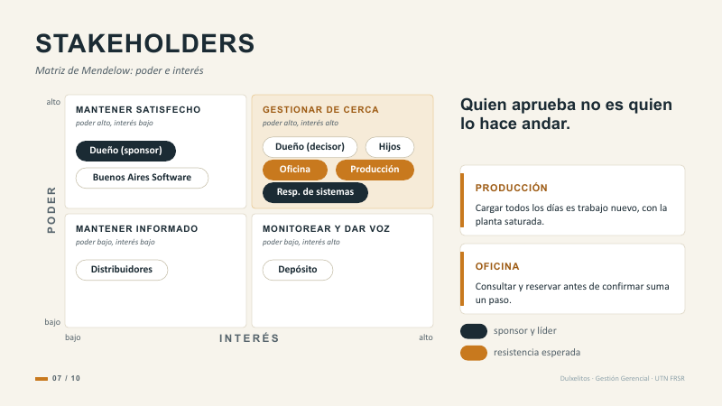
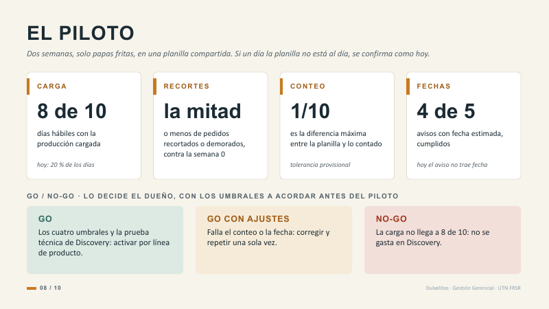
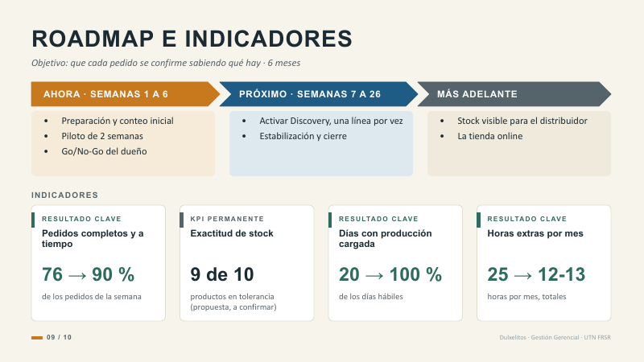
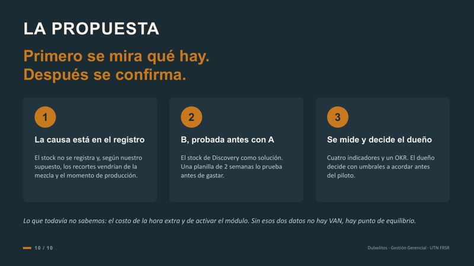

Gestión Gerencial · UTN FRSR · TP Final, Parte 2
El guion de la exposición de la propuesta para Dulxelitos. Está cortado en frases sueltas para decirlo en voz alta, no para leerlo corrido.
| Lám. | Título | Tiempo | |
|---|---|---|---|
| 01 | Portada | 20 s | |
| 02 | El problema y lo que mostró el relevamiento | 1 min 20 | |
| 03 | Así se atiende un pedido hoy (AS-IS) | 40 s | |
| 04 | Las tres lentes | 1 min 10 | |
| 05 | Alternativas y recomendación | 1 min 10 | |
| 06 | Primero se mira qué hay, después se confirma (TO-BE) | 1 min 10 | |
| 07 | Stakeholders: matriz de Mendelow | 1 min | |
| 08 | El piloto | 1 min 15 | |
| 09 | Roadmap e indicadores | 1 min 20 | |
| 10 | La propuesta (cierre) | 35 s | |
| Total | 10 min |
Los tiempos salen de contar las palabras de cada lámina a unas 165 por minuto, un ritmo de conversación. Las frases marcadas “si hay tiempo” no están en la cuenta: se dicen solo si vienen adelantados. El reparto es una propuesta: cámbienlo si quieren, pero que cada uno tenga un tramo seguido.

En pantalla: el nombre de la empresa, la parte 2, los cinco integrantes y los docentes.
Buenas. Somos Joaquín, Juan José, Juan, Emiliano y Manuel.
Esta es la parte 2 del trabajo sobre Dulxelitos: la propuesta.
Arrancamos por el problema que encontramos al relevar en detalle el proceso de pedidos.

En pantalla: cuatro números grandes (30, 76 %, ~25 h, 20 %) y abajo, en una línea, lo que mostró el relevamiento.
El problema es de gestión, no de tecnología: Dulxelitos acepta pedidos sin saber qué hay y produce sin mirar lo que se pidió.
Entran unos 125 pedidos por semana. En la semana que registramos, 30 salieron recortados o demorados. Dicho al revés: un 76 % de pedidos completos y a tiempo. Es una cuenta nuestra sobre una sola semana, no un promedio.
La meta es llegar al 90 % en 6 meses. Las horas extras y la carga de producción las retomamos en los indicadores.
Uno. El stock de producto terminado no se registra en ningún lado: para saber si hay, se mira a ojo y se le pregunta a producción.
Dos. Los recortes pasan todas las semanas, y vendrían sobre todo de mezcla y momento: se produce lo que no hace falta y falta lo que se pide. La planta sigue saturada, pero es un supuesto nuestro que medimos en el piloto.
Encaja con el diagnóstico: el costo de no actuar no se podía contar porque no había nada registrado.
“En la parte 1 miramos la empresa en general; para la parte 2 relevamos el proceso de pedidos paso a paso con nuestro compañero que trabaja ahí, y ese detalle mostró que el stock de producto terminado no se registra y que los recortes son semanales.” Dicho así, es lo que aporta el relevamiento, no un error.
Pase: “Ahora, cómo se atiende hoy un pedido.”
El 76 % es del grupo, sobre una sola semana. No lo presentes como promedio. Y en voz alta no digas “falta un sistema”: la causa es de registro y de criterio, no de software.

En pantalla: el diagrama completo del proceso AS-IS, con tres marcas naranja numeradas.
Este es el proceso “Atender pedido de distribuidor”, como funciona hoy.
Empieza con un mensaje del distribuidor por WhatsApp o teléfono y termina con el pedido facturado en Discovery y despachado.
Oficina anota el pedido. Para saber si hay mercadería, se mira a ojo en el depósito y se le pregunta a producción.
Si falta producto, hay tres salidas: mandar incompleto avisando, esperar producción o hacer horas extras. Lo dibujamos entero porque pasa todas las semanas.
Y abajo, aparte: el dueño o los hijos deciden qué producir por criterio propio, sin mirar los pedidos.
Señalá las tres marcas naranja con el puntero, una por una, mientras decís la frase que sigue.
Los tres números naranja son las tres lentes. Las vemos en la que sigue.
El diagrama entero se lee chico en la pantalla. No lo leas: señalá y seguí. Si piden detalle, el diagrama está en la sección 2 del informe, y la lámina que sigue trae recortes legibles de los tres puntos.

En pantalla: tres tarjetas, cada una con un recorte del diagrama, lo que encontramos y con qué se arregla.
Miramos el proceso con las tres lentes de la clase 7.
La disponibilidad se averigua dos veces: a ojo en el depósito y preguntando a producción. Ninguna alcanza sola. Se arregla reservando el stock contra pedidos antes de confirmar.
El mismo pedido se anota tres veces: queda en el chat, se copia al papel o planilla y se vuelve a copiar a una lista. Cada copia es un punto donde equivocarse. Se arregla cargando el pedido una sola vez.
Producción, depósito y ventas no comparten ningún dato. No hay stock registrado, y lo producido se carga una vez por semana en un control propio. Se arregla con un stock cargado todos los días y una sola regla.
Pausa de un segundo antes de la frase que sigue: es la que ordena la lámina.
Las tres lentes no dan tres proyectos. Dan una sola causa vista desde tres lados.
¿Es un balde o es la gotera? La gotera es doble: no se registra el stock y se produce sin mirar los pedidos. Avisar más rápido por WhatsApp sería poner un balde. Nosotros arreglamos la gotera.
Pase: “¿Qué alternativas había?”
Evita que el jurado cuente tres proyectos y pregunte por qué no los priorizaron. La respuesta ya está dicha: no se priorizan iniciativas, se ordenan los pasos de una sola: primero un quick win, la planilla del piloto, y después la inversión.

En pantalla: cuatro tarjetas con su puntaje sobre 50 (31, 36, 35 y 20) y una franja con el empate.
Evaluamos cuatro alternativas con una matriz de diez criterios, de 1 a 5, donde 5 siempre es lo mejor para la empresa. Los puntajes son juicio nuestro, no una medición.
Do Nothing suma 31 porque la suma premia lo fácil, pero no resuelve nada.
A, planilla compartida. Casi cero de costo y se arma sin proveedor ni instalación. Pero no se conecta con Discovery: al facturar se baja el físico y se descuenta la reserva a mano. Suma 36.
B, el stock de Discovery. Activar el módulo que, según nuestro compañero, ya está en la licencia y no se usa. Un solo registro, donde ya se factura. Suma 35.
C, un sistema de gestión en la nube. Cuota nueva, migración y doble carga. Suma 20 y la descartamos.
Lo honesto: A y B quedan casi empatadas, 36 contra 35. Un punto entre juicios no es una diferencia: decide el argumento.
Recomendamos B como solución y A como piloto de 2 semanas con papas fritas. Si el equipo no sostiene la carga diaria en una planilla simple, tampoco la va a sostener en Discovery, y habríamos pagado una herramienta por un problema de disciplina.
Si lo descubre el jurado, parece que lo escondimos. Y el argumento es sólido: las notas bajas de A son estructurales (la planilla vive aparte de Discovery: integración 2, alineación 3, continuidad 3) y las medias de B son incógnitas (nadie usó ese módulo en Dulxelitos) que el piloto y la prueba técnica despejan.
Dos cosas de B no están probadas: que Discovery reserve y que la factura consuma la reserva, y que el módulo esté en la licencia. Esto último lo sabe nuestro compañero y falta confirmarlo por escrito con Buenos Aires Software.

En pantalla: el recorte del diagrama TO-BE (la calle de Oficina), tres cambios a la derecha y abajo la regla del stock disponible.
Así queda el proceso con B andando. Cambia el orden: primero se mira qué hay, después se confirma.
Oficina carga la nota de pedido una sola vez en Discovery y consulta el stock disponible antes de confirmar. Si hay, reserva y confirma. Si no hay, avisa en el momento con una fecha estimada, que confirma producción en la reunión diaria.
Son tres cambios: una consulta en vez de dos, una carga del pedido en vez de tres, y la producción se carga todos los días.
Es una sola, y es la misma en la planilla del piloto y en Discovery:
stock disponible = stock físico − reservado por pedidos confirmados sin facturar.
Producción carga y sube el físico. Oficina reserva y baja el disponible. La factura consume la reserva y no mueve el disponible, porque ya se había descontado al reservar.
Lo que no cambia, a propósito: qué producir lo sigue decidiendo el dueño o uno de los hijos, ahora con pedidos y stock a la vista.
El pedido sigue entrando por WhatsApp o teléfono, y el armado y el despacho siguen igual.
Pase: “¿Y quién tiene que hacer que esto ande?”
La regla del stock disponible, de memoria. Si alguien pregunta “¿y cuánto hay?”, la respuesta es siempre esa cuenta.
El diagrama da por cierto tres supuestos sin probar: que Discovery reserve y la factura consuma la reserva (supuesto 3), que la fecha estimada se cumpla (4) y que el dueño y los hijos planifiquen mirando pedidos y stock mínimo (5). Decilo si preguntan. El diagrama completo está en la sección 3 del informe.

En pantalla: la matriz de Mendelow (poder contra interés) con los actores como fichas, y dos tarjetas con las resistencias.
Usamos la matriz de Mendelow, poder contra interés.
La conclusión: quien aprueba el proyecto no es quien lo hace andar.
El dueño es el sponsor: aprueba el presupuesto y el Go/No-Go. Poder alto e interés bajo: se lo mantiene satisfecho. El líder es el responsable de sistemas: la propuesta le da formalmente la gobernanza que en la parte 1 no tenía.
Pero el cambio lo hacen andar Producción y Oficina. No mandan sobre el proyecto, pero cualquiera lo frena con solo no usarlo. Se los gestiona de cerca.
Anticipamos dos resistencias. Producción: cargar todos los días es trabajo nuevo, con la planta saturada. Oficina: consultar y reservar suma un paso antes de confirmar.
Depósito tiene poder bajo e interés alto: se le da voz. A los 57 distribuidores se los mantiene informados. Buenos Aires Software, el proveedor de Discovery, pesa en la activación.
Y todo esto es lectura nuestra: lo vamos a contrastar con cada grupo antes del piloto.
La matriz no es una foto: cambia por fase, y está en el informe.
El dueño aparece dos veces: como sponsor (poder alto, interés bajo) y como decisor de la producción junto con los hijos (poder alto, interés alto). Es a propósito: son dos roles de la misma persona. Si preguntan por qué Mendelow y no influencia-impacto: el enunciado pide poder e interés, y la lámina de la clase 4 usa otra lectura.

En pantalla: cuatro medidas con su umbral y abajo las tres salidas del Go/No-Go.
Antes de gastar en Discovery, probamos. Un piloto de 2 semanas, solo con papas fritas, que es el producto que más falta, en una planilla compartida con la misma regla de stock.
Antes hay una semana 0 para medir la línea de base.
Mide cuatro cosas:
Carga. La producción de papas fritas cargada en 8 de los 10 días hábiles. Hoy es el 20 %.
Recortes. La mitad o menos de pedidos recortados o demorados que en la semana 0.
Conteo. Una diferencia de hasta una décima parte de lo contado.
Fechas. Cuatro de cada cinco avisos con fecha, cumplidos.
Lo decide el dueño, con umbrales que se acuerdan antes de arrancar el piloto, para no leer el resultado a favor.
Go: se cumplen los cuatro umbrales y pasa la prueba técnica de Discovery. Se activa por línea de producto.
Go con ajustes: falla el conteo o la fecha. Se corrige y se repite una sola vez.
No-Go: la carga no llega a 8 de 10. No se gasta en Discovery, porque una herramienta mejor no arregla un problema de disciplina.
Dos semanas con un producto dan una señal, no una demostración.
Pase: “¿Y cuándo, y cómo lo medimos?”
¿Y si un día la planilla no está al día? Oficina confirma como hoy, a ojo y preguntando a producción, y se anota el día. El piloto no toca Discovery ni el armado de pedidos. ¿Qué es la prueba técnica? En paralelo, el responsable de sistemas prueba un producto de punta a punta en Discovery y le consulta por escrito al proveedor. ¿Go sin mirar costos? No: además tiene que cerrar el punto de equilibrio con los datos de costo.
Los umbrales son propuesta nuestra, sin dato de la empresa que los respalde, y el dueño tiene que acordarlos. La línea de base de recortes de papas fritas todavía no existe: sale de la semana 0. No uses los 30 de ~125 como base del piloto: son de todos los productos.

En pantalla: tres columnas (ahora, próximo, más adelante) y cuatro indicadores con su base y su meta.
El plan es un roadmap de 6 meses, no un Gantt: detalla lo próximo y deja abierto lo lejano, porque la activación depende de lo que muestre el piloto.
Ahora, semanas 1 a 6: preparación y conteo inicial, el piloto de 2 semanas y el Go/No-Go del dueño.
Próximo, semanas 7 a 26: activar Discovery una línea de producto por vez, con las mismas medidas del piloto, y estabilizar. Es la fase más incierta: todavía no sabemos cuánto tarda la activación.
Más adelante: que el distribuidor vea el stock, y la tienda online. Está anotado, no planificado: antes tiene que existir un stock confiable que mostrar.
El OKR: que cada pedido se confirme sabiendo qué hay, con tres resultados clave: pedidos completos y a tiempo del 76 al 90 %, días con producción cargada del 20 al 100 %, y horas extras de unas 25 a unas 12 o 13 por mes, más la exactitud de stock, un KPI permanente.
Cada indicador tiene su ficha y su contrapeso: el segundo número que empeora si alguien fuerza el primero.
Una aclaración: la meta de horas extras, la mitad, es un supuesto. Se apoya en que al menos la mitad de esas horas completa pedidos que faltaron por mezcla y momento.
No es resultado clave: su línea de base todavía no existe, sale del conteo inicial. Es un KPI permanente, una condición que tiene que estar siempre bien, y sigue en el tablero cuando el OKR termina. En la lámina, “9 de 10” es propuesta nuestra.
Los indicadores se encadenan: la carga diaria avisa antes que la exactitud, y la exactitud antes que los pedidos. Si preguntan por qué no medir solo los pedidos: porque informan cuando ya pasó; la carga avisa mientras todavía se puede corregir.
Las 16 semanas de activación son una propuesta. Si no alcanzan, se activan menos líneas dentro de los 6 meses y la meta del 90 % se revisa en el cierre. La meta de exactitud, 9 de 10, es propuesta: no inventes la base.

En pantalla: la frase en naranja, tres puntos numerados y una nota con lo que todavía no sabemos.
Primero se mira qué hay. Después se confirma.
Uno. La causa está en el registro: el stock no se registra y, según nuestro supuesto, los recortes vendrían de la mezcla y el momento de producción.
Dos. Recomendamos B, el stock de Discovery, probada antes con una planilla de 2 semanas.
Tres. Se mide con cuatro indicadores y decide el dueño.
Lo que todavía no sabemos: el costo de la hora extra y el de activar el módulo. Sin eso no hay VAN: hay un punto de equilibrio.
Pausa de un segundo antes del último párrafo. Es la frase que se tienen que llevar.
Primero se mira qué hay. Después se confirma. Gracias.
Decir lo que no sabemos antes de que lo pregunten es coherente con todo el trabajo: lo que falta queda como dato pendiente, no como un número inventado. Después de la frase, gracias, y paso a las preguntas. Si preguntan por el punto de equilibrio: si el costo mensual de B dividido el costo de la hora extra da menos de unas 12 o 13 horas, se paga con la meta.
Las once que más chances tienen de caer, con la respuesta corta.
Porque 36 contra 35 no es una diferencia: es un punto entre puntajes de juicio, y la matriz no decide. Además, la matriz puntuó A y B como solución para los 6 meses y todo el catálogo, no como piloto. Las notas bajas de A son estructurales: la planilla vive aparte de Discovery, el pedido se carga dos veces y al facturar se baja el físico y se descuenta la reserva a mano. Las de B son incógnitas que se despejan probando.
Por eso A va primero, como piloto, y B es el destino. Si Discovery no funciona como esperamos, seguimos con A antes que pasar a C.
No lo sabemos. Es un supuesto razonado, no un dato, y es el más importante de todos (el supuesto 1). Lo razonamos así: la producción la deciden el dueño o los hijos por criterio propio, sin mirar los pedidos; y los recortes pasan todas las semanas aunque las horas extras ya tapan la saturación de la planta. Lo medimos en el piloto: en la semana 0 se anota la causa de cada recorte, y se ve si bajan al planificar contra pedidos.
Si resulta que la mayoría es de capacidad, se revisa la meta del 90 %: lo que queda es un problema de planta, y está fuera de alcance.
Es el riesgo más alto: hoy carga 1 de cada 5 días. Por eso el piloto es con planilla. Si no llega a 8 de los 10 días, es No-Go y no se gasta en Discovery.
Además: un responsable de carga por turno con suplente, la carga al cierre dentro del turno, y que la carga diaria reemplace al control semanal propio en vez de sumarse. Si se cae, se revisan primero capacitación, carga de trabajo, incentivos y reglas, no el compromiso de la gente.
Lo evaluamos como categoría y lo descartamos: cuota nueva, migración, capacitación y doble carga, porque Discovery no se integra con otros sistemas. Reemplazar Discovery está fuera de alcance.
Y no resuelve lo central: si el equipo no sostiene la carga en una planilla simple, tampoco la va a sostener en un sistema más grande.
Todavía no lo sabemos y no inventamos números. Faltan el costo de la hora extra y el de activar el módulo. Armamos un punto de equilibrio: si el costo mensual de B dividido el costo de la hora extra da menos de unas 12 o 13 horas, se paga con la meta, que es bajar a la mitad las ~25 horas extras por mes.
No contamos el margen de los pedidos que dejan de recortarse, así que la cuenta es conservadora.
Es una meta nuestra, no un dato de la empresa. Es una pyme con la planta saturada y siempre va a haber roturas e imprevistos: 90 % deja un 10 % de margen y es una meta que el equipo puede sostener. Si el piloto muestra que la mezcla explica menos de lo que suponemos, la meta se revisa.
No: la meta es bajarlas a la mitad, de unas 25 a unas 12 o 13 por mes. Parte de las horas extras tapa la saturación de la planta, que es capacidad y está fuera de alcance. La mitad es un supuesto, a confirmar con el dueño: la liquidación de sueldos no distingue una hora de otra.
Del relevamiento con nuestro compañero que trabaja en Dulxelitos: 30 recortados de ~125 en una semana, ~25 horas extras por mes y producción cargada una vez por semana. Es una sola fuente y una sola semana. Lo declaramos, y que esa semana sea representativa es justamente el supuesto 9.
Hoy el distribuidor ya recibe avisos y pedidos incompletos sin quejarse, así que lo vemos poco probable (supuesto 6). El piloto lo observa: se anota cómo reacciona a cada aviso. La fecha es una promesa nueva, y si no se cumple, el aviso pierde el valor que hoy tiene: por eso el umbral de 4 de cada 5.
Protege la operación y alcanza para aprender. Papas fritas es lo que más falta. Es un MVP funcional: el experimento mínimo para validar una hipótesis, no una versión beta. Dos semanas con un producto dan una señal; lo que no prueba, como el efecto en todo el catálogo, la baja de las horas extras y el retorno, queda para el Go/No-Go posterior a la activación.
En el AS-IS no lo relevamos: queda como dato pendiente. La propuesta lo cierra así: si el disponible no alcanza, Oficina avisa; la fecha la confirma Producción; las horas extras las decide Dirección en el plan semanal. Falta acordarlo con el dueño.
Lo que hace la diferencia no es saberse el guion, es cómo lo decís.
Dulxelitos · Trabajo Práctico Final, Parte 2 — Propuesta de mejora
Lepez Joaquín · Geyer Juan José · Lopez Juan · Olivares Manuel · Sorato Emiliano